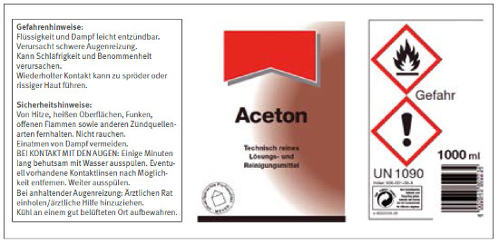

Empfohlene Maßnahmen zur Begrenzung oder Vermeidung schädlicher Wirkungen erhält der Anwender durch die P-Sätze (vergleichbar mit den früheren S-Sätzen). Der Buchstabe P steht für Precautionary und bedeutet Vorsorge. Die Kennziffern sind dreistellig und nach folgender Systematik aufgebaut:
Gruppe der Sicherheitshinweise:
| • | Vorsorgehinweise allgemeiner Art | P100 ff |
| Beispiel: P102 – Darf nicht in die Hände von Kindern gelangen. | ||
| • | Vorsorgehinweise zur Prävention | P200 ff |
| Beispiel: P271 – Nur im Freien oder in gut belüfteten Räumen verwenden. | ||
| • | Vorsorgehinweise zur Reaktion | P300 ff |
| Beispiel: P312 – Bei Unwohlsein GIFTINFORMATIONSZENTRUM/Arzt/... anrufen. | ||
| • | Vorsorgehinweise zur Lagerung | P400 ff |
| Beispiel: P403 – An einem gut belüfteten Ort aufbewahren. | ||
| • | Vorsorgehinweise zur Entsorgung | P500 ff |
| Beispiel: P501 – Inhalt/Behälter ... zuführen. | ||
Jedem H-Satz sind gewisse P-Sätze zugeordnet. Um die Etiketten nicht zu überfrachten, sollen die Hersteller bei der Kennzeichnung die Anzahl der P-Sätze möglichst auf sechs begrenzen. Dazu sind Kombinationssätze zusammengestellt z. B.:
| • | P411 + P235 | Bei Temperaturen nicht über ... °C/ ... °F aufbewahren. Kühl halten. |
Die Begrenzung der P-Sätze auf dem Etikett kann dazu führen, dass gleiche Produkte je nach Hersteller und Einsatzzweck unterschiedliche Sicherheitshinweise enthalten. Im Sicherheitsdatenblatt sind weitere Informationen zur sicheren Verwendung, z.B. im Abschnitt 7 „Handhabung und Lagerung“ enthalten.
Die vollständige Liste aller P-Sätze befindet sich im Anhang 5 – Sicherheitshinweise – P-Sätze.
Abbildung 4 zeigt für Aceton ein Etikett mit der Kennzeichnung nach der CLP-Verordnung.

Abb. 4 Kennzeichnung für Aceton nach CLP-Verordnung *